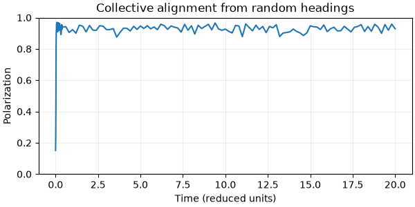
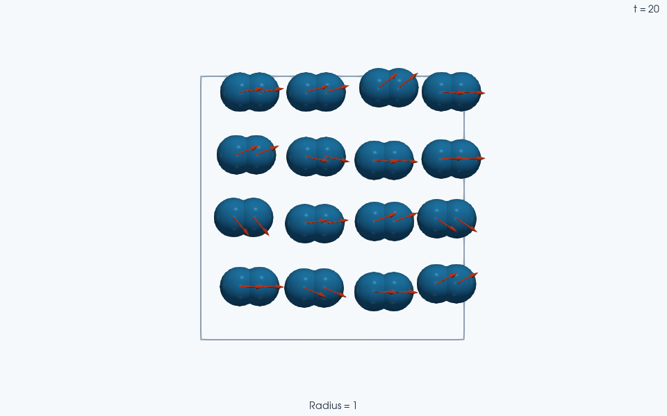

Note
Go to the end to download the full example code.
Vicsek alignment of rigid dumbbells#
This small 2D active-matter example extends Vicsek alignment to 16 rigid two-sphere clumps in periodic boundaries. Harmonic contact repulsion is added to the neighbor-alignment vector before normalization. This force-biased, finite-size dumbbell model is an extension of the canonical point-agent model; it is not a demonstration of its bulk ordering transition.
The intrinsic variant rotates each body’s heading by a random angle in
[-pi * eta, pi * eta]. The extrinsic variant adds a random vector before
normalizing. Both prescribe speed v0 rather than integrating Newton’s law.
In these reduced units the contact-force and velocity contributions have unit
weights. Physical mass and inertia therefore do not determine the motion.
The rotational integrator is disabled: the dumbbell geometry keeps its
orientation while its translational heading changes.
We initialize nonaligned random headings, run 2,000 steps, and report polarization
|mean(v)| / v0. A fixed seed makes the short run reproducible. Longer runs
and larger ensembles are needed to study collective ordering.
import jax
from dataclasses import dataclass
from functools import partial
from typing import cast
jax.config.update("jax_enable_x64", True) # type: ignore[no-untyped-call]
import jax.numpy as jnp
import numpy as np
import jaxdem as jdem
from jaxdem.integrators import free_mask
from jaxdem.utils.linalg import cross, dot, unit
Alignment and noise equations#
The neighbor query acts on constituent sphere centers. For each sphere i, include its own velocity in the average and then average those vectors over the members of body I:
Thus alignment is weighted by constituent-neighbor geometry, rather than
counting each neighboring body once. Both the force and alignment vectors
are averaged over the body’s n_I spheres. Their unit coefficients are
a modeling choice in the reduced units used here.
Intrinsic angular noise rotates the normalized base heading:
If the base vector vanishes, the implementation retains the body’s current nonzero heading before rotating it. The extrinsic alternative adds a random unit vector before normalization:
Angular and vectorial noise therefore represent different stochastic models, even at the same eta. Noise is sampled per body and broadcast to its members, preserving coherent translation. Positions advance by \(\Delta t\,\mathbf v_I^{n+1}\); this is a prescribed active-velocity update, not a force-over-mass step.
Local Vicsek integrators#
def _vicsek_alignment(
state: jdem.State,
system: jdem.System,
neighbor_radius: jax.Array,
max_neighbors: int,
) -> tuple[jdem.State, jdem.System, jax.Array, jax.Array]:
"""Shared Vicsek pre-processing: neighbor query and clump-wise averages.
Build the neighbor list and average the neighbor velocities (including
self). Reduce the alignment vector and the accumulated force to one
clump-wise value each. Broadcast these values to all clump members.
Queries use the exact requested radius; incomplete queries propagate to
the system overflow flag so checked stepping can reject the result.
Returns
-------
Tuple[State, System, jax.Array, jax.Array]
The state and system, the clump-broadcast force,
and the clump-broadcast average neighbor velocity.
"""
# Neighbor list query.
state, system, nl, overflow = system.collider.create_neighbor_list(
state, system, neighbor_radius, max_neighbors
)
system.search_overflow |= overflow
vel = state.vel
# Gather neighbor velocities (with padding-safe indexing).
safe_nl = jnp.maximum(nl, 0)
nbr_vel = vel[safe_nl] # (N, K, dim)
valid = nl != -1
# Average neighbor velocity including self.
sum_v = jnp.sum(nbr_vel * valid[..., None], axis=1) + vel
count = jnp.sum(valid, axis=1) + 1
avg_v = sum_v / count[..., None]
# Clump-wise average of avg_v (so each clump has a single alignment vector)
# and clump-wise force.
counts = jnp.bincount(state.clump_id, length=state.N)
counts_safe = jnp.where(counts > 0, counts, 1).astype(avg_v.dtype)
clump_values = (
jax.ops.segment_sum(
jnp.concatenate((avg_v, state.force), axis=-1),
state.clump_id,
num_segments=state.N,
)
/ counts_safe[..., None]
)
clump_values = clump_values[state.clump_id]
avg_v = clump_values[..., : state.dim]
force = clump_values[..., state.dim :]
return state, system, force, avg_v
@jax.jit(inline=True)
def _apply_desired_velocity(
state: jdem.State, system: jdem.System, v_des: jax.Array
) -> tuple[jdem.State, jdem.System]:
"""Shared Vicsek tail: set the velocities of the free particles and advance the positions."""
state.vel = jnp.where(free_mask(state), v_des, state.vel)
state.pos_c = state.pos_c + system.dt * state.vel
return state, system
@jdem.LinearIntegrator.register("vicsek_extrinsic")
@jax.tree_util.register_dataclass
@dataclass(slots=True)
class VicsekExtrinsic(jdem.LinearIntegrator):
"""Vicsek-model integrator with **extrinsic** (vectorial) noise.
Each step, the integrator sets the translational velocity magnitude to
``v0``. The direction comes from a vector that combines:
- the current accumulated force vector (from colliders + force functions),
- the average neighbor velocity direction (including self),
- an additive random unit vector scaled by ``eta`` (extrinsic noise).
Notes
-----
- The integrator draws the noise **per clump** (one sample per rigid body)
and broadcasts it to all clump members, so clumps move coherently.
- A collider may cache the neighbor list (e.g., NeighborList collider) or
sort the state (e.g., some cell-list builders). This integrator uses the
returned state from ``create_neighbor_list`` for consistency.
"""
neighbor_radius: jax.Array
eta: jax.Array
v0: jax.Array
max_neighbors: int = jax.tree.static()
@staticmethod
@jax.jit(inline=True)
@partial(jax.named_call, name="VicsekExtrinsic.step_after_force")
def step_after_force(
state: jdem.State, system: jdem.System
) -> tuple[jdem.State, jdem.System]:
vicsek = cast(VicsekExtrinsic, system.linear_integrator)
state, system, force, avg_v = _vicsek_alignment(
state, system, vicsek.neighbor_radius, vicsek.max_neighbors
)
# Random unit vector per clump (extrinsic/vectorial noise).
system.key, noise_key = jax.random.split(system.key)
if state.dim == 2:
angles = jax.random.uniform(
noise_key, shape=(state.N,), minval=0.0, maxval=2.0 * jnp.pi
)
unit_clump = jnp.stack([jnp.cos(angles), jnp.sin(angles)], axis=-1)
else:
# Isotropic direction in R^3 by normalizing a Gaussian vector.
raw = jax.random.normal(
noise_key, shape=(state.N, 3), dtype=state.vel.dtype
)
unit_clump = unit(raw)
noise_dir = unit_clump[state.clump_id]
f = force + avg_v + vicsek.eta * noise_dir
v_des = vicsek.v0 * unit(f)
return _apply_desired_velocity(state, system, v_des)
@jdem.LinearIntegrator.register("vicsek_intrinsic")
@jax.tree_util.register_dataclass
@dataclass(slots=True)
class VicsekIntrinsic(jdem.LinearIntegrator):
"""Vicsek-model integrator with **intrinsic** noise.
This variant perturbs the *direction* of the desired motion. It applies a
random rotation to the normalized base direction. It does not add a random
vector in force space as the extrinsic (vectorial-noise) variant does.
The base direction comes from:
- the current accumulated force vector (from colliders + force functions),
- the average neighbor velocity direction (including self).
The integrator then applies the noise per clump and broadcasts it to all
clump members, so clumps move coherently.
"""
neighbor_radius: jax.Array
eta: jax.Array
v0: jax.Array
max_neighbors: int = jax.tree.static()
@staticmethod
@jax.jit(inline=True)
@partial(jax.named_call, name="VicsekIntrinsic.step_after_force")
def step_after_force(
state: jdem.State, system: jdem.System
) -> tuple[jdem.State, jdem.System]:
vicsek = cast(VicsekIntrinsic, system.linear_integrator)
state, system, force, avg_v = _vicsek_alignment(
state, system, vicsek.neighbor_radius, vicsek.max_neighbors
)
base_vector = force + avg_v
# Retain the current heading if force and alignment cancel exactly.
base_dir = jnp.where(
jnp.linalg.norm(base_vector, axis=-1, keepdims=True) > 0.0,
unit(base_vector),
unit(state.vel),
)
# Intrinsic noise: randomly rotate the base direction.
# Angle perturbation in [-pi, pi] scaled by eta, generated per clump.
system.key, noise_key = jax.random.split(system.key)
dtheta_clump = (2.0 * jax.random.uniform(noise_key, shape=(state.N,)) - 1.0) * (
jnp.pi * vicsek.eta
)
dtheta = dtheta_clump[state.clump_id]
if state.dim == 2:
c = jnp.cos(dtheta)
s = jnp.sin(dtheta)
# Rotate base_dir by dtheta: [x', y'] = [c -s; s c] [x, y]
rot = jnp.stack([c, -s, s, c], axis=-1).reshape((-1, 2, 2))
dir_clump = jnp.einsum("nij,nj->ni", rot, base_dir)
else:
# 3D: sample random rotation axis (uniform on sphere), then rotate by angle.
system.key, axis_key = jax.random.split(system.key)
raw_axis_clump = jax.random.normal(
axis_key, shape=(state.N, 3), dtype=state.vel.dtype
)
axis = unit(raw_axis_clump[state.clump_id])
# Rodrigues' rotation formula: v' = v c + (k x v) s + k (k·v) (1-c)
c = jnp.cos(dtheta)[..., None]
s = jnp.sin(dtheta)[..., None]
k = axis
v = base_dir
k_cross_v = cross(k, v)
k_dot_v = dot(k, v)[..., None]
dir_clump = v * c + k_cross_v * s + k * k_dot_v * (1.0 - c)
v_des = vicsek.v0 * dir_clump
return _apply_desired_velocity(state, system, v_des)
This function sets the initial data
For one-call builders see
build_sphere_system() and
build_ga_system()
(sphere_construction and
general_particle_construction
examples).
def build_microstate(
N: int,
phi: float,
dim: int,
dt: float,
neighbor_radius: float,
eta: float,
v0: float,
seed: int,
integrator_type: str = "vicsek_extrinsic",
) -> tuple[jdem.State, jdem.System]:
# neighbor-list capacity per particle. It must be large enough that the
# collider does not overflow
max_neighbors = N - 1
# Mono-disperse spheres of radius 1.0. The ratio lists are relative and
# normalize away. Only ``small_radius`` sets the absolute scale.
particle_radii = jdem.utils.dispersity.get_polydisperse_radii(
N, [1.0], [1.0], small_radius=1.0
)
assert N % 2 == 0
N_clumps = N // 2
# Bounding radius of each dumbbell: sphere radius 1.0 + center offset 0.5.
clump_radii = jdem.utils.dispersity.get_polydisperse_radii(
N_clumps, [1.0], [1.0], small_radius=1.5
)
if dim != 2:
raise ValueError("This dumbbell construction is two-dimensional.")
# A square grid avoids a separate relaxation problem during construction.
# phi describes the bounding disks, not the overlapping dumbbell union.
n_axis = int(np.sqrt(N_clumps))
if n_axis**2 != N_clumps:
raise ValueError("Use a square number of dumbbells for this grid.")
side = jnp.sqrt(jnp.sum(jnp.pi * clump_radii**2) / phi)
centers = (jnp.arange(n_axis) + 0.5) * side / n_axis
x, y = jnp.meshgrid(centers, centers, indexing="ij")
pos_clumps = jnp.stack((x.ravel(), y.ravel()), axis=-1)
box_size = jnp.full(2, side)
angles = jax.random.uniform(
jax.random.key(seed), (N_clumps,), minval=0.0, maxval=2.0 * jnp.pi
)
headings = jnp.stack((jnp.cos(angles), jnp.sin(angles)), axis=-1)
pos_c = jnp.repeat(pos_clumps, 2, axis=0)
pos_p = jnp.tile(jnp.array([[-0.5, 0.0], [0.5, 0.0]]), (N_clumps, 1))
clump_id = jnp.repeat(jnp.arange(N_clumps), 2)
# No compute_clump_properties call here (cf. clump_guide Pitfall #1):
# the Vicsek integrators prescribe velocities directly, so the dynamics
# never use the clump mass and inertia.
state = jdem.State.create(
pos=pos_c,
pos_p=pos_p,
vel=v0 * jnp.repeat(headings, 2, axis=0),
rad=particle_radii,
mass=jnp.ones(N),
clump_id=clump_id,
)
mats = [jdem.Material.create("elastic", young=1.0, poisson=0.5, density=1.0)]
matcher = jdem.MaterialMatchmaker.create("harmonic")
mat_table = jdem.MaterialTable.from_materials(mats, matcher=matcher)
system = jdem.System.create(
state_shape=state.shape,
dt=dt,
# Vicsek integrator:
linear_integrator_type=integrator_type,
linear_integrator_kw={
"neighbor_radius": jnp.asarray(neighbor_radius, dtype=float),
"eta": jnp.asarray(eta, dtype=float),
"v0": jnp.asarray(v0, dtype=float),
"max_neighbors": max_neighbors,
},
rotation_integrator_type=None,
domain_type="periodic",
domain_kw={"box_size": box_size},
force_model_type="spring",
mat_table=mat_table,
# here, we use the naive (double for-loop) collider because the system is small.
# For a larger system, use the CellList or the NeighborList instead.
collider_type="naive",
seed=seed,
)
return jdem.System.initialize(state, system)
Build the initial data
state, system = build_microstate(
N=32, # 32 spheres -> 16 two-sphere clumps
phi=0.65, # fraction occupied by the bounding disks
dim=2, # 2D
dt=1e-2, # displacement v0*dt = 0.01, well below sphere radius 1
neighbor_radius=4.0, # center-distance query for constituent spheres
eta=0.2, # small noise component
v0=1.0, # prescribed body speed in reduced units
seed=0,
integrator_type="vicsek_intrinsic",
)
# Follow enough actual motion to see bodies traverse the periodic box.
# Save every step during the initial alignment, then sample the later motion
# every 20 steps. Both histories contain actual states; no interpolation is
# needed to watch the initial random headings become correlated.
n_steps = 2_000
save_stride = 20
dense_steps = 40
remaining_frames = (n_steps - dense_steps) // save_stride
state_dense, system_dense, (dense_states, dense_systems) = (
jdem.System.trajectory_rollout(
state,
system,
n=dense_steps,
stride=1,
)
)
state_f, system_f, (traj_state, traj_system) = jdem.System.trajectory_rollout(
state_dense,
system_dense,
n=remaining_frames,
stride=save_stride,
)
traj_state = jax.tree.map(
lambda initial, dense, sparse: jnp.concatenate(
(jnp.expand_dims(initial, 0), dense, sparse)
),
state,
dense_states,
traj_state,
)
traj_system = jax.tree.map(
lambda initial, dense, sparse: jnp.concatenate(
(jnp.expand_dims(initial, 0), dense, sparse)
),
system,
dense_systems,
traj_system,
)
The dimensionless polarization for M bodies is
Perfect alignment gives one; a finite disordered sample usually has a nonzero value from sampling fluctuations. The constituent mean below equals the body mean because every body has exactly two spheres. With unequal member counts, select one representative velocity per body to avoid weighting larger clumps more heavily. A single short trace does not establish a phase transition; ensemble averages and size/run-length studies are needed for that.
system_f.check_overflow()
v0 = float(system_f.linear_integrator.v0)
polarization = jnp.linalg.norm(jnp.mean(traj_state.vel, axis=-2), axis=-1) / v0
speeds = np.linalg.norm(np.asarray(traj_state.vel), axis=-1)
np.testing.assert_allclose(speeds, v0, rtol=1e-10, atol=1e-10)
print(
f"Polarization, initial/final (0 = disordered, 1 = aligned): "
f"{float(polarization[0]):.3f} / {float(polarization[-1]):.3f}"
)
print(f"Body-speed range: {speeds.min():.3f} to {speeds.max():.3f}")
Polarization, initial/final (0 = disordered, 1 = aligned): 0.151 / 0.928
Body-speed range: 1.000 to 1.000
Collective alignment#
The first point measures the initial random headings. The ParaView arrows show translational velocity: the fixed orientation of each dumbbell is independent of its direction of travel in this nonrotating model. The speed invariant is checked above rather than plotted as a flat curve.
import matplotlib.pyplot as plt
fig, axis = plt.subplots(figsize=(6, 3), layout="constrained")
time = np.asarray(traj_system.time)
axis.plot(time, np.asarray(polarization))
axis.set(
xlabel="Time (reduced units)",
ylabel="Polarization",
ylim=(0, 1),
title="Collective alignment from random headings",
)
axis.grid(alpha=0.2)
plt.show()


Arrows show the instantaneous translational velocities, including the initial random headings. They are projected above the spheres for visibility; body orientations and native velocities are unchanged.
Total running time of the script: (0 minutes 18.835 seconds)